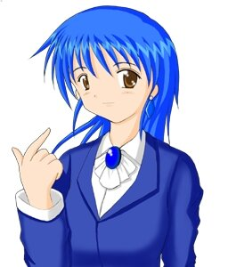

- Welcome to Touhou Wiki!
- Please register to edit. For assistance, check in with our Discord server or IRC channel.
Milia
| ミリア Milia miɾia̠ Miria | |
|---|---|
|
Milia in Banshiryuu
| |
| Species | |
| Age |
29/26/in her 30's (???) |
| Occupation | |
| Location |
Seihou World (Earth) |
Music Themes | |
| |
Appearances | |
| Official Games | |
| |
- Note: This article is part of the Seihou Project by the Doujin circle "Shunsatsu sare do?".
Milia (ミリア) is a subordinate commander and a researcher of the Cactus Company hired by Erich from the outskirts. She is also known as "Lightning-fast Milia" and has appeared in every game so far in the Seihou Project.
General Information[edit]
Milia first appeared as the first stage boss of Shuusou Gyoku, where after she appeared as a playable character in Kioh Gyoku. About 7 years later when Banshiryuu had C74 version release, she appeared as the 2nd Extra Stage boss in a boss rush.
Age[edit]
Though she was 18, in this series her age has become 29, so VIVIT calls her an old hag. It appears that Milia has a puzzling ageing process throughout the games. Her age is 29 in Shuusou Gyoku, 26 in Kioh Gyoku, and in her 30s in Banshiryuu.
Machinery[edit]
In Shuusou Gyoku, she fights with a blue-coloured vessel by the name Sylph. Since it was destroyed in Shuusou Gyoku, she returns with the new Sylph# in Kioh Gyoku. The name of her vessel is unknown in Banshiryuu.
Character Basis[edit]
Name[edit]
The name Milia is from the German language and it means industrious. In Latin, Milia as word is an inflected form of mīlle (thousand). Alternatively, the word Milia is a plural of Milium, which is a type of disease. It gives harmless white spots around the eye or sometimes on the nose.
Her name is spelt as "Miria" in Banshiryuu within the song title "Miria the Sylphid", which could most-likely be an incorrect translation, although the romaji of ミリア is "Miria". Milia is a more correct English translation.
Design[edit]
Milia's design in Shuusou Gyoku's shows that she has blue shoulder length hair and grey eyes where she wears a blue business suit with a grey tie. In Kioh Gyoku, she appears just as same, except she wears a blue brooch on her neck instead of a tie and appears to have brown eyes. In Banshiryuu, she once again has brown eyes, but wears a black business dress with pantyhose. She also has a black collar on her neck and a purple earring accessory.
Story[edit]
- Shuusou Gyoku
- Main article: Shuusou Gyoku Story
In Shuusou Gyoku, she battles against VIVIT to test her abilities. She was vexed by what VIVIT said to her at that time.
- Banshiryuu
In the Extra Stage, Milia appears in what appears to be the Forest of Great Regression in a aircraft and appears as one of the many "evil beings". She believes that the heroine thinks that she's going to be defeated, which she does.
Relationships[edit]
VIVIT[edit]
Milia appears to have a grudge against VIVIT. In Shuusou Gyoku, Milia calls VIVIT a "scrap metal fighter maid" while VIVIT calls her a "crazy old hag". In Kioh Gyoku, they simply give bad expessions to each other.
Erich[edit]
| Attention: This section is a stub and it needs expanding with more information related to the section's topic. If you can add to it in any way, please do so. |
Official Profiles[edit]
|  | ◆ ミリア ◆
・カンパニーの研究員、２６歳。 ☆ 機体名 ☆ ☆ 特徴 ☆ |
◆ Milia ◆
・Research of the Company, 26 years old. ☆ Aircraft name ☆ ☆ Characteristics ☆ |
Official Sources[edit]
- 2000/12/30 Shuusou Gyoku
- 2001/12/30 Kioh Gyoku
- 2008/08/16 Banshiryuu
| This page is part of Project Characters, a Touhou Wiki project that aims to write proper descriptions for all official characters of Touhou Project. Please keep the character page guidelines in mind when contributing. |